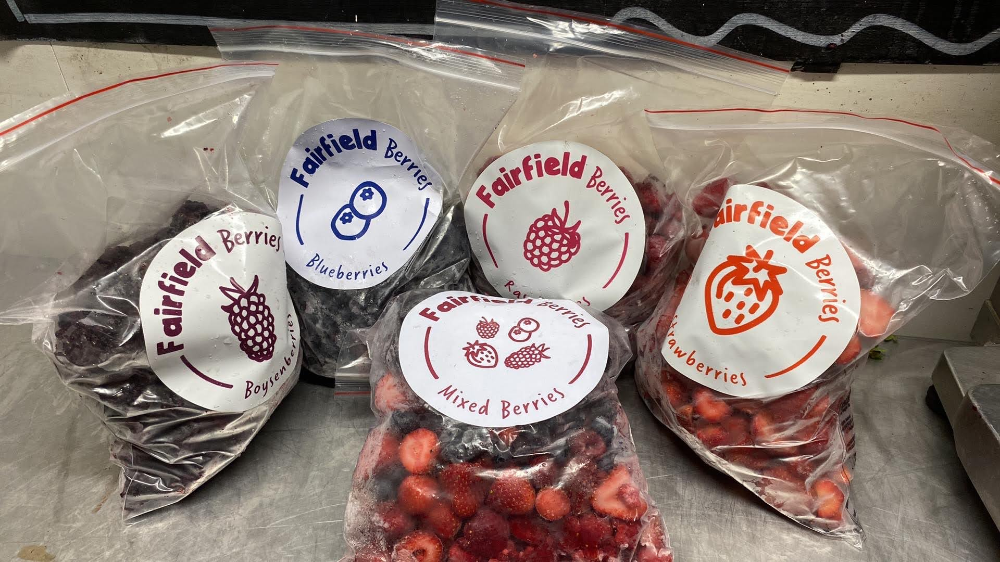
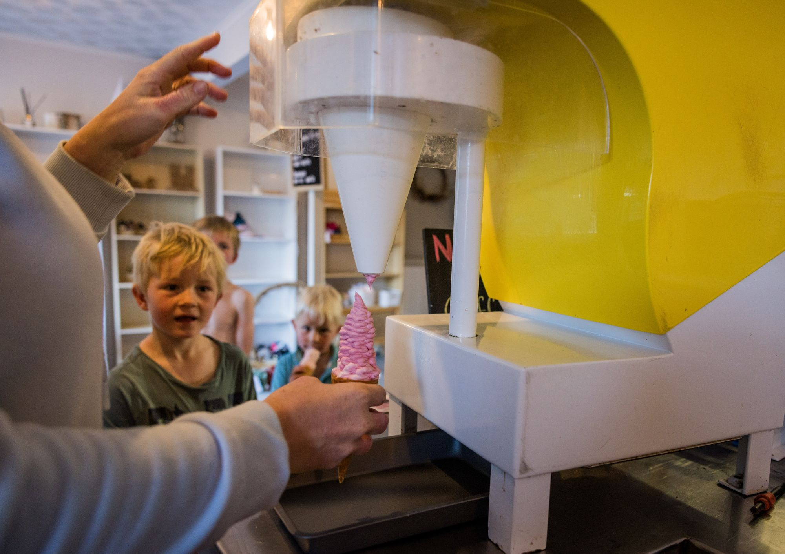
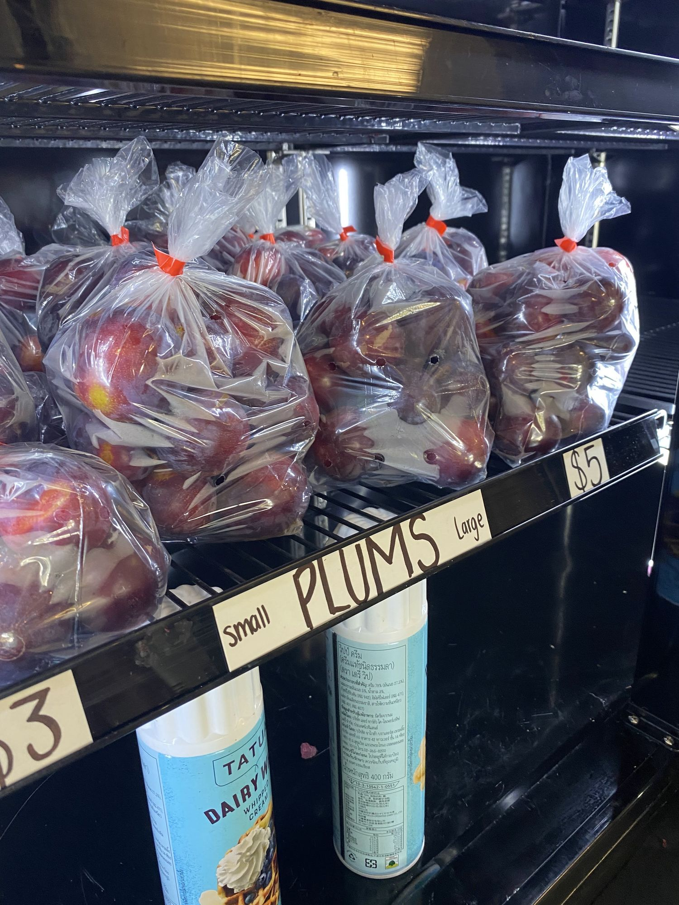
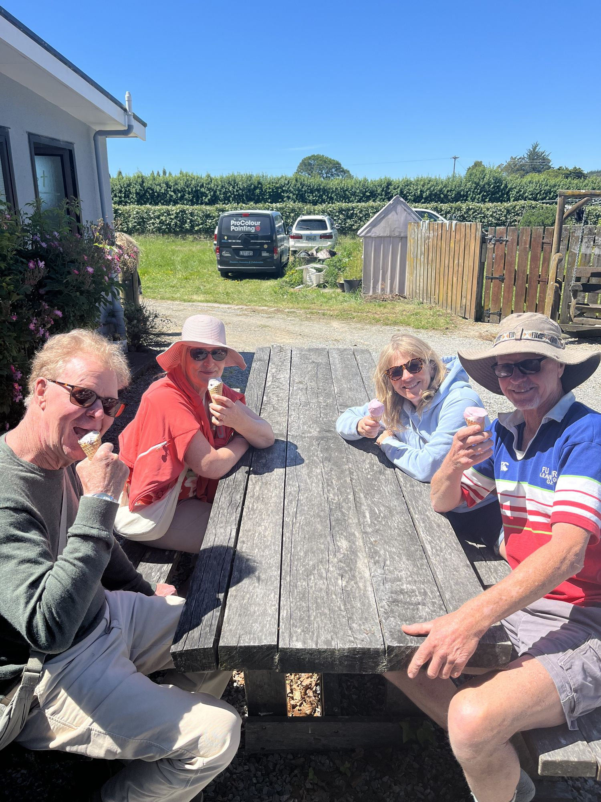
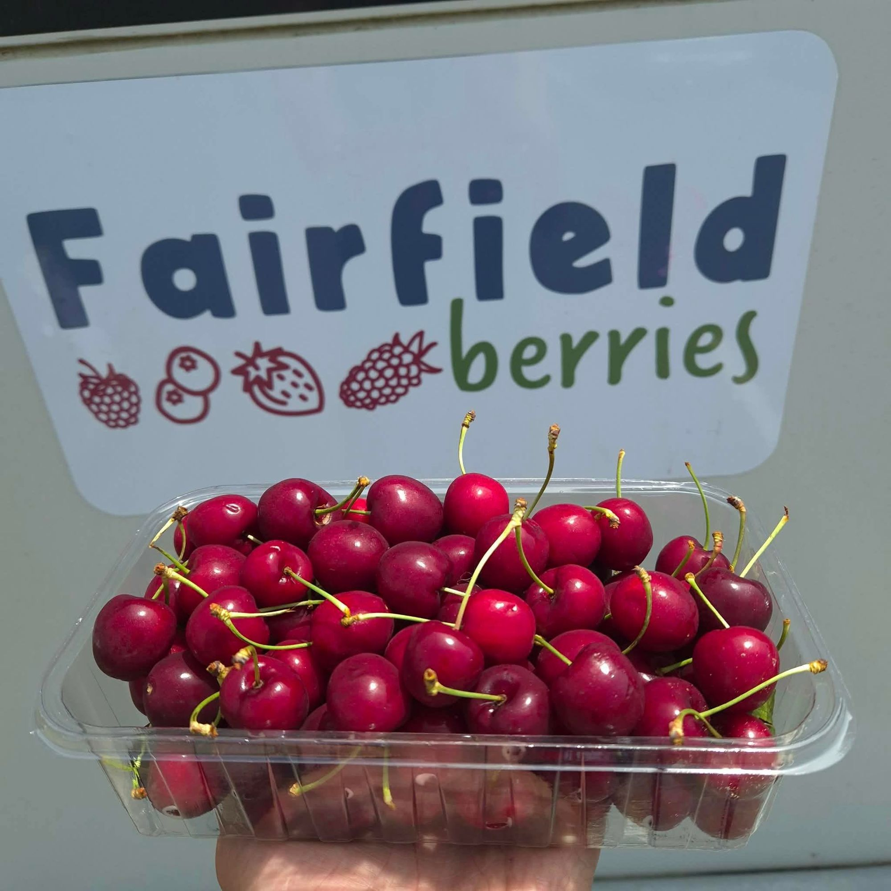
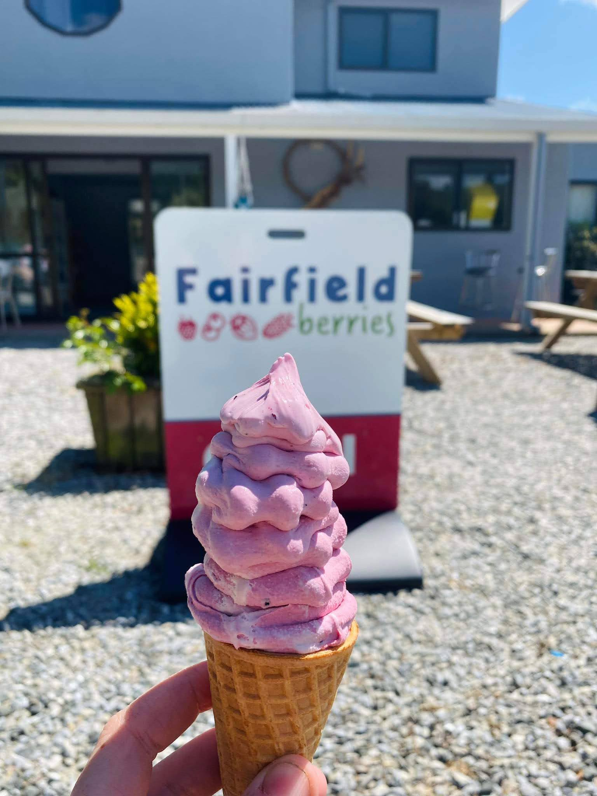
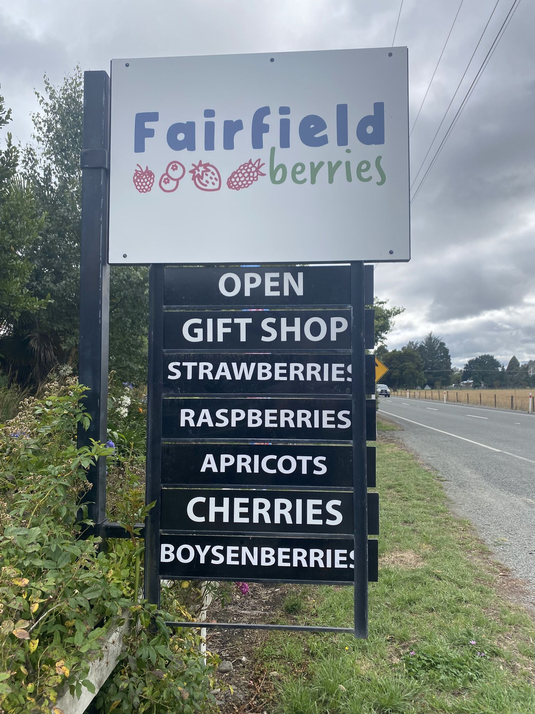
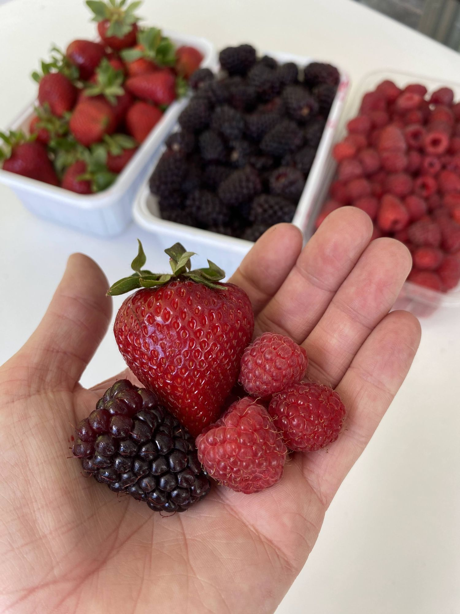
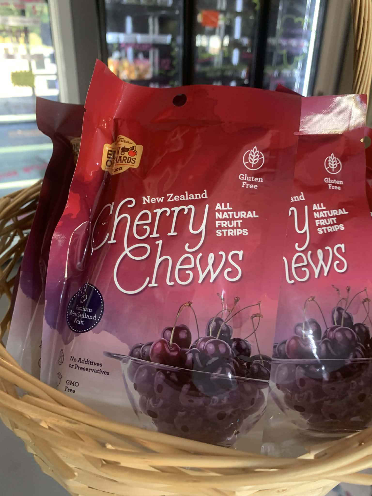
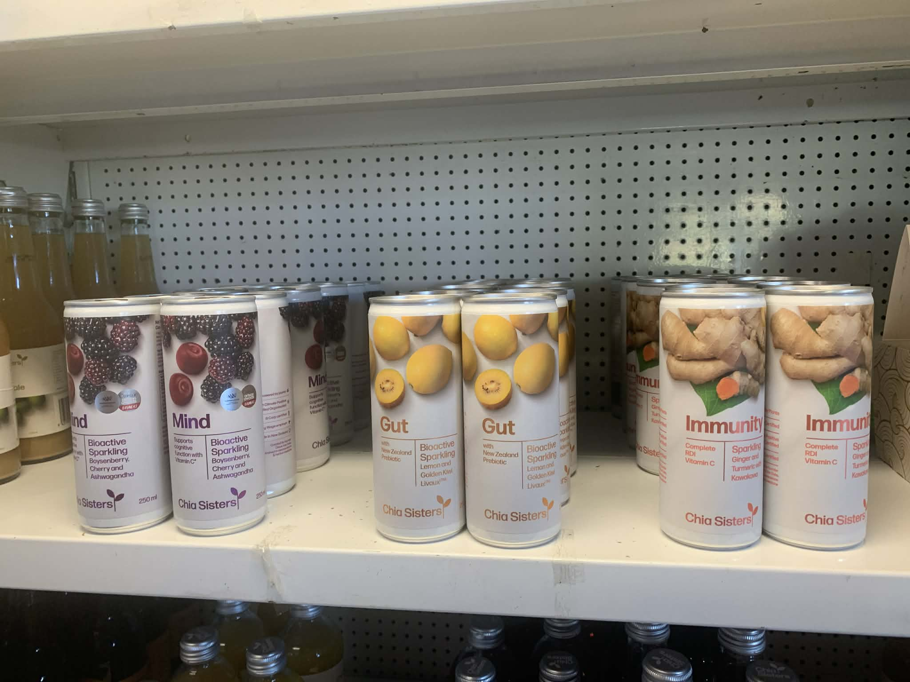

Farm Shop
Fresh and frozen berries, real fruit ice cream and locally made gifts and products from Nelson Tasman.
Explore the shop
Choose an area below to jump straight to what you're looking for.
Berries: fresh & frozen
Shop seasonal fresh raspberries, boysenberries, strawberries, blueberries, cherries, blackberries, apricots, nectarines and peaches. All raspberries, strawberries and boysenberries are grown at Fairfield Berries. Frozen fruit is sold in 1 kg bags: mixed berries, raspberries, blueberries, boysenberries, strawberries, apricots and Black Doris plums. Availability varies by season.

Real fruit ice cream
Enjoy our real fruit ice cream: $6.50 for an adult and $4 for a kiddie cone. Add-ons and speciality flavours incur additional costs.
Flavours
- Mixed berry
- Raspberry
- Strawberry
- Boysenberry
- Banana
- Feijoa
- Coffee
- Mocha
- Honey
- Choc berry
Make it your own
- Yoghurt option
- Cup or cone
- Kiddie cone size
- Dairy-free, vegan gelato
- Chocolate flake: $1 extra
- Takeaway ice cream tubs
Take a little of Fairfield home with you.
Ice cream prices · Flavour FAQs
Check Instagram for current updates.
Gifts
Every gift in our shop is made locally in the Nelson Tasman region. When you shop at Fairfield Berries, you are supporting local makers, small businesses and our community.
Local products
Locally sourced. Locally made. We're proud to stock products from local Nelson Tasman producers and makers. Our local stockists are all based in the region, so every purchase helps support our community. Visit the shop to discover the range.
Farm Shop photo gallery
Scroll through treats, fruit and shop favourites.









Swipe to see more →